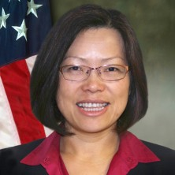
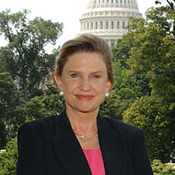
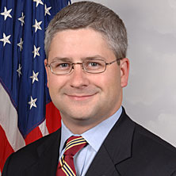
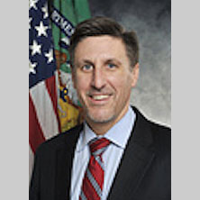

Gene Dodaro, Comptroller General of the United States.
Gene Dodaro, Comptroller General of the United States.
Gene Dodaro, Comptroller General of the United States.
Christina Ho has twenty years of broad professional experience in financial management, operations, and accounting. Christina is a...
 Hudson Hollister is the founder and Executive Director of the Data Transparency Coalition. Prior to founding the Data Transparency...
Hudson Hollister is the founder and Executive Director of the Data Transparency Coalition. Prior to founding the Data Transparency...
 David Lebryk was appointed Fiscal Assistant Secretary on June 30, 2014. Fiscal Assistant Secretary Lebryk brings more than 25 years of...
David Lebryk was appointed Fiscal Assistant Secretary on June 30, 2014. Fiscal Assistant Secretary Lebryk brings more than 25 years of...
 David Mader, Controller, Office of Management and Budget.
David Mader, Controller, Office of Management and Budget.
Rep. Carolyn Maloney, Subcommittee Ranking Member of the House Financial Services Committee.
Rep. Patrick McHenry, Deputy Majority Whip and Subcommittee Chairrman of the House Financial Services Committee.
Matthew Reed is Chief Counsel for the Office of Financial Research at the U.S. Department of the...